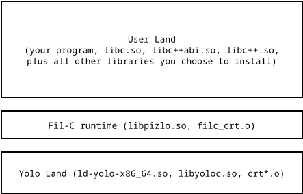

Fil-C Runtime
Programs compiled with Fil-C enjoy comprehensive memory safety thanks to the entire userland stack being compiled with the Fil-C compiler. There is no interoperability with Yolo-C (i.e. classic C). This is both a goal and the outcome of a non goal.
Goal: To prevent memory safety issues arising from code linked into your Fil-C program. Lots of memory safety solutions make it easy to lock down just a small part of your program. While this can be a satisfying thing to do for systems builders as it shows progress towards memory safety, it's also easy for the attackers to work around. Software that's in a perpetually "partly memory safe" state is really in a perpetually unsafe state. It's a goal of Fil-C to take a giant leap towards complete memory safety, rather than slowly inching towards it.
Non-Goal: To support interoperability with Yolo-C. That kind of interoperability is hard to engineer, both from a language design and a language implementation standpoint. Fil-C uses pointers that carry capabilities. It's hard to imagine a satisfactory language design that allows Yolo-C code to pass a pointer to Fil-C while having some kind of meaningful capability associated with that pointer. Even if a design existed, actually making it work is even harder, particularly since Fil-C uses accurate garbage collection and Yolo-C++ has explicitly removed support for garbage collection of any kind. It's a non-goal of Fil-C to try to marry its garbage collected capabilities with languages that disallow garbage collection and lack capabilities.
Building a meaningful product often means accepting what you can and cannot do and then embracing the limitations that fall out. Fil-C proudly embraces comprehensive memory safety.
What does this look like in practice? This document shows the current status.
The libc Sandwich
Fil-C has a runtime (libpizlo.so and filc_crt.o) that is written in Yolo-C and that links to a libc compiled with Yolo-C. Another libc, compiled with Fil-C, lives on top of the runtime. The rest of your software stack then lives on top of that libc.

Let's review the components:
ld-yolo-x86_64.so. This is the ELF loader. Because Fil-C currently uses musl as the libc, this is really a symbolic link tolibyoloc.so(this loader-symlibs-libc trick is a musl-ism). It's compiled with Yolo-C.libyoloc.so. This is a mostly unmodified musl libc, compiled with Yolo-C. The only changes are to expose some libc internal functionality that is useful for implementinglibpizlo.so. Note thatlibpizlo.soonly relies on this library for system calls and a few low level functions. In the future, it's possible that the Fil-C runtime would not have a libc in Yolo Land, but insteadlibpizlo.sowould make syscalls directly.crt*.o. These are the Yolo-C program startup trampolines that call musl's libc start function.libpizlo.so. The Fil-C runtime lives in this library. It is based on the libpas memory management toolkit, the FUGC and safepoints, and everything needed to support memory safe threading, system calls, signal handling, capability slow paths, and other things not provided by the compiler. Programs compiled with the Fil-C compiler strongly depend onlibpizlo.so(you will see symbols with thefilc_prefix imported by any module compiled with the Fil-C compiler; this symbols are defined inlibpizlo.so).libpizlo.socontains some code written in Fil-C, like the C personality function (for supporting C exceptions), and some of the logic to makeepoll(2)work in Fil-C.filc_crt.o. This provides the Yolo-Cmainfunction that the libc start function expects to be able to call, and imports thepizlonated_mainfunction that a Fil-C program would define.filc_crt.o's job is to calllibpizlo.so'sfilc_start_programfunction, passing it the program arguments and pointer topizlonated_main.libc.so. This is a modified musl libc compiled with Fil-C. Most of the modifications are about replacing inline assembly for system calls with calls tolibpizlo.so's syscall API.libc++abi.so. This is a modified LLVM project libc++abi compiled with Fil-C. The largest modification is to use Fil-C's variant of libunwind and Fil-C's way of tracking exception tables.libpizlo.soprovides the core unwind functionality, like_Unwind_RaiseException.libc++abi.soprovides the C++ personability function. Note that the personality function is compiled with Fil-C (so it's totally memory safe).libc++.so. A lightly modified LLVM project libc++ compiled with Fil-C.Your program and your libraries. Your whole program must be compiled with Fil-C. Your programs dependencies must be compiled with Fil-C as well.
Note that while I'm showing shared libraries (.sos), it's possible to compile a static Fil-C executable, in which case ld-yolo-x86_64 doesn't come into play at all and the rest of the stack is statically linked into your program.
You can see a bit of this architecture by calling the stdfil.h zdump_stack function:
#include <stdfil.h>
int main()
{
zdump_stack();
return 0;
}
This program prints:
<runtime>: zdump_stack
stack.c:5:5: main
src/env/__libc_start_main.c:79:7: __libc_start_main
<runtime>: start_program
Let's examine these frames starting from the bottom:
<runtime>: start_program. This is thelibpizlo.sofilc_start_programfunction called byfilc_crt.o. Note that this is sandwiched between two__libc_start_mainfunctions. Further below the stack (where the Fil-C stack scan cannot see) is the Yolo-C__libc_start_mainfunction fromlibyoloc.so, and directly above this is the Fil-C__libc_start_mainfromlibc.so.src/env/__libc_start_main.c:79:7: __libc_start_main. This is the userlibc.sostart function, compiled with Fil-C.stack.c:5:5: main. This is our actualmainfunction, compiled with Fil-C.<runtime>: zdump_stack. This islibpizlo.so's implementation ofzdump_stack.
Memory Safe Linking And Loading
Fil-C relies on ELF. I have also previously demonstrated it working on Mach-O. Fil-C does not require changes to the linker. The only changes to the musl loader are to teach it that from its standpoint, the libc that it cares about is called libyoloc.so not libc.so. Fil-C even supports advanced ELF features like weak symbols, weak or strong aliases, comdats, and even ifuncs. Fil-C ifuncs are just Fil-C functions and they are totally memory safe. That said, Fil-C has its own ABI (Application Binary Interface) and that ABI is not compatible with Yolo-C.
Linking and loading "just works" because of the following four ABI modifications:
Mangling: each symbol in your program is mangled by having
pizlonated_prepended to it. This preventslibcsymbols from colliding withlibyolocsymbols, for example. It also prevents any of your code from colliding withlibpizlo.Getter indirection: the
pizlonated_symbols, likepizlonated_main, are getters that return the Fil-C flight pointer (so intval and capability) to the thing that the symbol refers to. When you access a symbol in your C or C++ code, the compiler emits a call to the relevant getter (with minimal optimizations to eliminate redundant calls to the same getter), and then your code uses the returned pointer and capability without trusting anything about it (i.e. function calls do the function check, reads and writes do full bounds and permission checking, etc). Note that ifuncs are implemented by having the getter call back into Fil-C (with special shenanigans to catch recursive calls).Demotion of ODR to Any: Fil-C does not allow the compiler or linker to assume that multiple definitions by the same name are equivalent; it forces the more conservative assumption that they may differ.
The compiler and loader (
ld-yolo-x86_64.so) both search for headers and libraries in the pizfix, so that Fil-C gets its own slice separate from system libraries that follow Yolo-C ABI rather than Fil-C ABI.
Put together, this means that even wild misuse of linker capabilities in your Fil-C program will at worst result in a memory safe outcome (like a Fil-C panic).
To learn more, check out Explanation of Fil-C Disassembly.